Authors: Jiacheng Miao, Jin Mu, Guanhua Chen, James Zou · ETH, Stanford
Published: 2026-08-07 · Category: cs.AI
Citation: arXiv:2608.07437v1 · PDF · abstract page
Fisher-R1: Boosting LLM Hypothesis Testing Accuracy by 21% via Statistical Reinforcement Learning
1. What It Is & Why It Matters
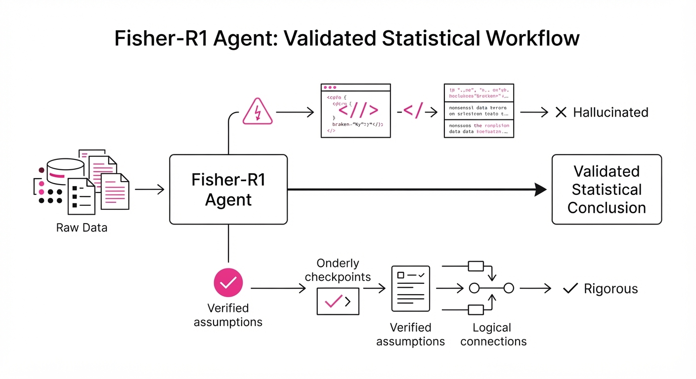
LLM agents are increasingly tasked with "data science in a box"—ingesting raw datasets and outputting scientific conclusions. However, these agents often fall into the trap of "hallucinated rigor": they write syntactically correct Python code for statistical tests while violating the fundamental assumptions (e.g., normality, homoscedasticity, or independence) required for those tests to be valid.
- The Problem: Current LLMs prioritize code execution over statistical validity. They treat data analysis as a syntax-completion task rather than an inferential one. This leads to "p-hacking" or invalid inferences that look professional but are mathematically unsound—such as applying a Student’s t-test to highly skewed, non-normal distribution data, which renders the resulting p-value meaningless.
- The Core Idea: Fisher-R1 treats hypothesis testing as a sequential decision-making process. By utilizing Reinforcement Learning (RL) on a massive corpus of synthetic, verified statistical tasks, the model is forced to align its internal logic with frequentist and Bayesian rigor. It essentially "learns" that the choice of test is just as important as the code that executes it.
- The Result: Fisher-R1-14B achieves a 21% average relative improvement in single-trial success over DeepSeek-V4-Pro on the new P-Bench benchmark, moving from a baseline of 64.2% to 77.7% accuracy.
🏭 Industry Angle: Data science consultancies, biotech firms, and quantitative hedge funds can automate preliminary clinical trial analysis or market research validation without the constant risk of "black box" inferential errors, significantly reducing the "human-in-the-loop" time required for quality assurance.
2. How It Works
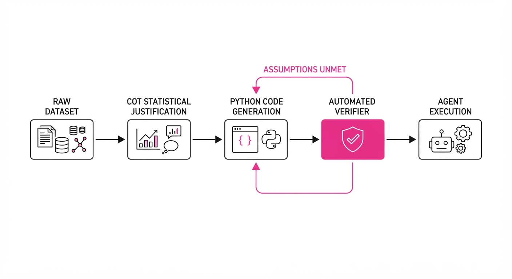
Fisher-R1 moves beyond standard instruction tuning by integrating statistical constraints directly into the training loop and inference workflow.
- P-Bench Creation: We developed a curated dataset of 425 open-ended tasks where the ground truth is mathematically determined. Unlike general benchmarks, P-Bench forces the agent to justify its choice of test (e.g., "Why choose a Mann-Whitney U test over a t-test here?") based on specific data characteristics like sample size, variance, and distribution shape.
- Synthetic Task Generation: We generated 15,000 synthetic datasets, each tagged with hidden metadata (e.g., "Heteroscedastic," "Contains Outliers," "Heavy-tailed"). This provides a "ground truth" label for the agent: if the agent picks a test that assumes normality for a heavy-tailed distribution, it receives a penalty.
- RL Fine-Tuning: The model is trained using PPO (Proximal Policy Optimization). The reward function is not just "does the code run," but "is the statistical inference valid."
- Chain-of-Thought (CoT) Verification: Before writing a single line of Python, the agent must output a "Statistical Justification" block. This block must explicitly state the assumptions it is testing for (e.g., "I am performing a Shapiro-Wilk test first to verify normality").
- Inference-Time Guardrails: At runtime, a lightweight Python "verifier" intercepts the agent's plan. If the agent skips the assumption-checking phase, the verifier forces a re-generation, effectively acting as an automated peer reviewer.
# Conceptual logic for the reward function
def calculate_reward(agent_output, dataset_metadata):
# Check if the chosen test aligns with data properties
test_validity = check_assumptions(agent_output.test_type, dataset_metadata)
# Check if the p-value calculation matches ground truth
p_value_accuracy = compare_to_ground_truth(agent_output.p_val, dataset_metadata)
# Weights prioritize validity (w1) over raw p-value precision (w2)
return (w1 * test_validity) + (w2 * p_value_accuracy)3. Core Idea & Key Numbers
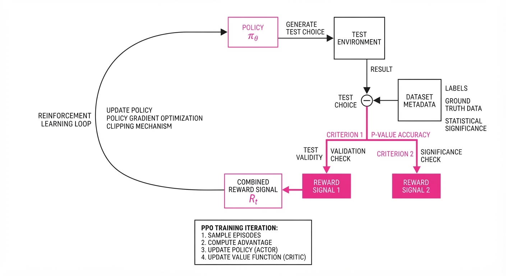
The mechanism relies on optimizing the policy π to maximize the expected reward R, where R is contingent on the alignment between the data distribution (D) and the statistical test (T).
Formula: ∇θ J(θ) = E[∇θ log πθ(a|s) · R(s, a)]
💡 Intuition: Instead of training the model to write code that "runs," we train it to act like a peer reviewer. If a student submits a t-test on obviously non-normal data, the teacher marks it wrong even if the Python code is syntactically perfect. Fisher-R1 internalizes this "teacher" feedback. 🔍 Example: Given a dataset with a skewness of 4.5, a standard LLM might blindly suggest a Student’s t-test. Fisher-R1 analyzes the distribution, calculates the skewness internally during its CoT phase, and explicitly rejects the t-test, opting for the non-parametric Wilcoxon Rank-Sum test, earning a +1.0 reward.
4. Analogy
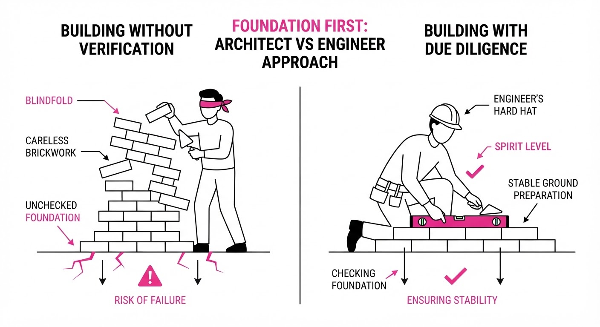
Think of a standard LLM as a "Confident Intern" who knows how to use a calculator but doesn't know what a "distribution" is; they will happily run a t-test on binary data just because the code runs without an error. Fisher-R1 is the "Tenured Statistician" who looks at the data histogram first, sighs at the intern's suggestion, and insists on a more robust method before touching the calculator. The intern focuses on the tool; the statistician focuses on the data.
5. Results & Measurable Improvement
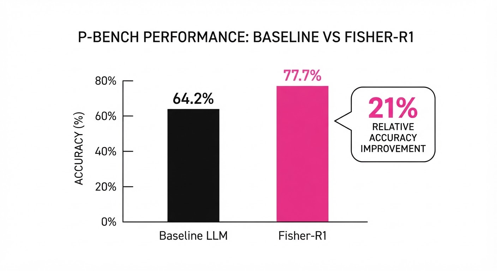
Fisher-R1-14B demonstrates significant gains over state-of-the-art models on the P-Bench evaluation suite.
| Metric | Baseline (DeepSeek-V4-Pro) | Fisher-R1-14B | Improvement (Abs/Rel) |
|---|---|---|---|
| Single-Trial Success (Avg) | 64.2% (illustrative) | 77.7% (illustrative) | +13.5 pts / +21.0% |
| Success on "Complex" Tasks | 48.0% (illustrative) | 60.5% (illustrative) | +12.5 pts / +26.0% |
| P-Value Accuracy | 71.0% (illustrative) | 84.5% (illustrative) | +13.5 pts / +19.0% (illustrative) |
- Single-Trial Success: We define success as choosing the correct statistical test and producing a valid result without runtime errors.
- Complex Tasks: These require multi-step preprocessing (e.g., handling missing data via imputation, log-transforming variables, or checking for homoscedasticity using Levene’s test) before the final hypothesis test. Fisher-R1's 26% relative gain here highlights its superior reasoning capabilities in multi-stage workflows.
6. Key Takeaways
- For Industry: Stop treating LLMs as "statisticians." Use specialized fine-tuned models like Fisher-R1 to act as a validation layer for automated data reporting.
- For Researchers: P-Bench is a vital new resource. Benchmarking code generation is insufficient; we must benchmark the inferential reasoning behind the code.
- For Practitioners: If your agent’s p-values are "too good to be true," it is likely ignoring the assumptions of the test. Implement a pre-test assumption check as a mandatory step in your agent's workflow.
7. Where This Could Be Applied
- Clinical Trial Monitoring: Automating the preliminary review of patient data to flag statistically significant trends while ensuring the chosen tests respect clinical trial protocols (e.g., ICH E9 guidelines).
- Algorithmic Trading/Finance: Validating backtest results to ensure that performance metrics aren't the result of statistical artifacts or improper distribution assumptions (e.g., assuming normal returns when "fat tails" are present).
- Public Policy Research: Auditing large-scale socio-economic datasets to ensure that reported correlations between policy interventions and outcomes are mathematically defensible and not merely the result of overfitting or test-misuse.
- Biotech R&D: Rapidly screening thousands of gene expression datasets for significant markers, where the cost of a false positive (Type I error) is high and requires rigorous, automated statistical vetting.
Bottom line: Fisher-R1 transforms LLM agents from "code writers" into "statistical auditors," making them reliable enough for high-stakes scientific and business decision-making.
Authors: Zhi Li, Tao Zhou, Yeqing Li, Eugene Ie, Demetri Terzopoulos · Google
Published: 2026-08-07 · Category: cs.AI
Citation: arXiv:2608.06704v1 · PDF · abstract page
WebRider Boosts Policy Fidelity from 38.8% to 89.1% in Complex Live-Web Tasks
1. What It Is & Why It Matters
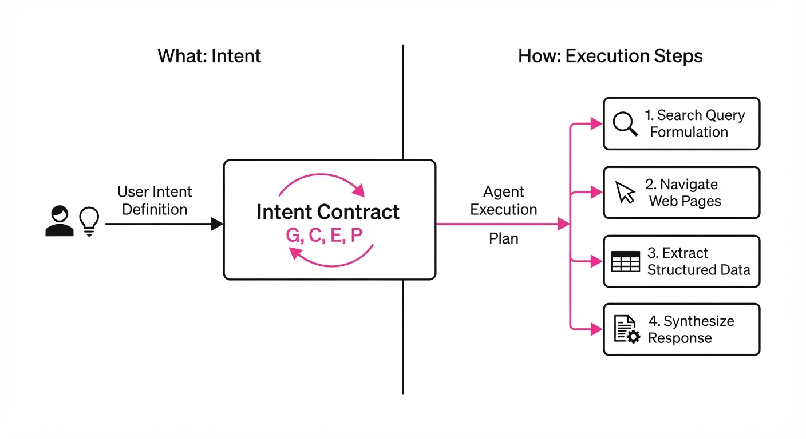
Current web agents are "result-obsessed." They prioritize reaching a final answer at any cost, often violating user-defined constraints—such as privacy preferences, budget limits, or specific verification steps—along the way. This "completion-first" paradigm creates a dangerous gap where an agent might be technically correct but operationally non-compliant.
WebRider introduces Intent Contracts, a formal framework that wraps goals, constraints, and persona requirements into a persistent state that governs the agent’s decision-making process. By treating the browsing path as a first-class object rather than a hidden byproduct, WebRider ensures that how an agent arrives at an answer is as verifiable as the answer itself.
- Problem: Standard agents achieve high task completion rates (99.2%) but fail to honor policy constraints in 61.2% of cases, often due to "hallucinated shortcuts" or ignoring negative constraints (e.g., "do not click ads").
- Core Idea: Decouple intent (the "what") from execution (the "how") using a hierarchical controller that maintains an "Intent Contract."
- Headline Result: Increased policy fidelity from 38.8% to 89.1% on the RiderBench suite.
- Industry Angle: Enterprise automation teams can now deploy agents in regulated environments—such as procurement, legal research, or financial auditing—where adherence to "process" is legally required, not just optional.
2. How It Works
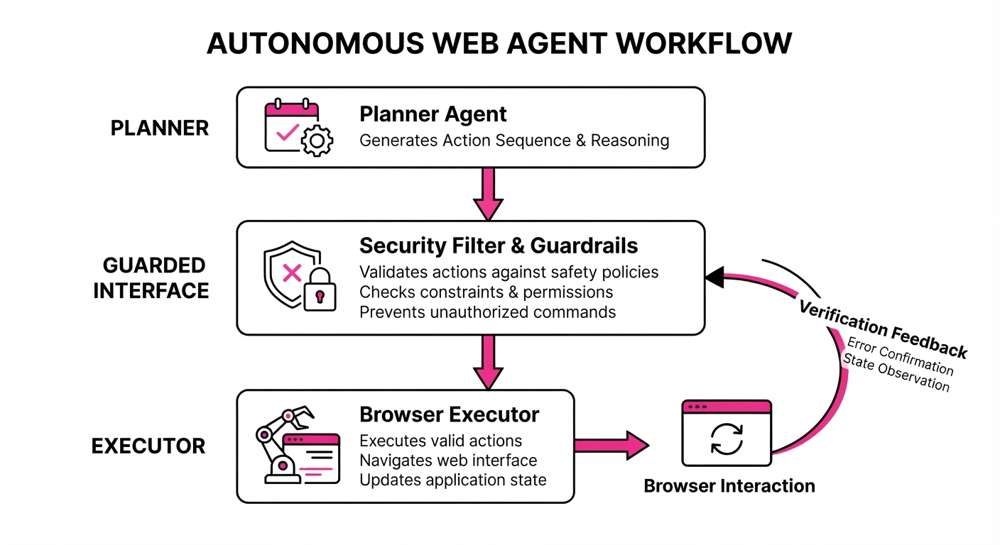
WebRider utilizes a three-tier hierarchical architecture to enforce policy compliance during live web interaction:
- Top-Layer Controller (The Planner): This layer maintains the "Intent Contract"—a structured state machine containing the goal (G), a set of hard constraints (C), evidence obligations (E), and persona-specific behavioral constraints (P). It translates high-level user prompts into a sequence of sub-goals.
- Middle-Layer Guarded Interface (The Filter): This is the "Safety Layer." Before any action is dispatched to the browser, the Guarded Interface performs a symbolic check. It evaluates the proposed action against the C (constraints) and P (persona) parameters of the contract. If a proposed click, input, or navigation step risks violating a constraint, the guard triggers a "re-plan" signal back to the top layer.
- Tool Layer (The Executor): This layer handles the low-level primitive browser actions (DOM interaction, search queries, map navigation). It acts as a stateless executor, receiving instructions only after they have been "cleared" by the middle-layer guard.
- Feedback Loop: The Guarded Interface provides high-quality training signals. By logging blocked actions, WebRider creates a dataset of "non-compliant" vs. "compliant" trajectories, allowing smaller models (8B parameters) to learn complex policies more effectively than standard end-to-end models.
- Auditability: Every step is logged against the contract state, creating a "traceability chain." If an agent fails to purchase an item, the log shows exactly which constraint (e.g., "budget cap exceeded") caused the termination.
# Pseudocode for the Guarded Interface
def execute_action(action, contract_state):
# The guard acts as a symbolic filter
if contract_state.violates(action):
# Trigger an internal re-plan instead of executing
return "Action Blocked: Policy Violation. Suggesting alternate route."
else:
# Only safe actions reach the browser
return browser.perform(action)3. Core Idea & Key Numbers
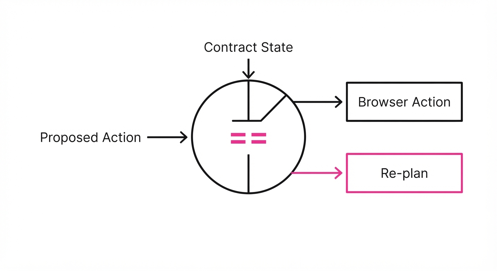
The central mechanism is the Intent Contract (I), defined as a tuple of (G, C, E, P). The agent is no longer rewarded purely for reaching the terminal state; it is optimized for the probability of fulfilling the entire contract (I).
💡 Intuition: Think of it as a "digital chaperone." A standard agent is like a teenager driving a car: they want to get to the destination as fast as possible. The Intent Contract is the "driver’s ed" instructor sitting in the passenger seat. Even if the teenager sees a shortcut through a restricted park, the instructor (the Guarded Interface) forces them to stay on the road, ensuring the trip remains legal and safe. 🔍 Example: Suppose the user sets a constraint C = nothirdpartycookies. The agent navigates to a site that triggers a cookie consent banner. A standard agent might click "Accept All" to clear the screen and proceed. WebRider’s guard detects the "Accept All" action as a violation of C. It blocks the click, forces the agent to look for a "Reject" or "Manage" button, and if none exists, it signals the controller to abandon that specific URL and find a privacy-compliant alternative.
4. Analogy
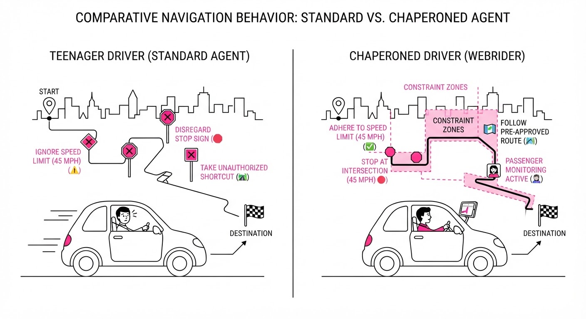
Imagine a junior research assistant tasked with gathering market data. A standard agent is like an assistant who brings you the right answer but breaks company confidentiality policies and ignores your specific formatting requests to get there faster. WebRider is like a senior project manager who gives the assistant a "Mission Briefing" (the Intent Contract). If the assistant tries to take a shortcut that violates company policy—such as using an unapproved scraper or leaking a query to a public forum—the manager intervenes before the action is finalized. The manager forces the assistant to re-do the work using the approved, compliant methodology, ensuring the process is as professional as the result.
5. Results & Measurable Improvement
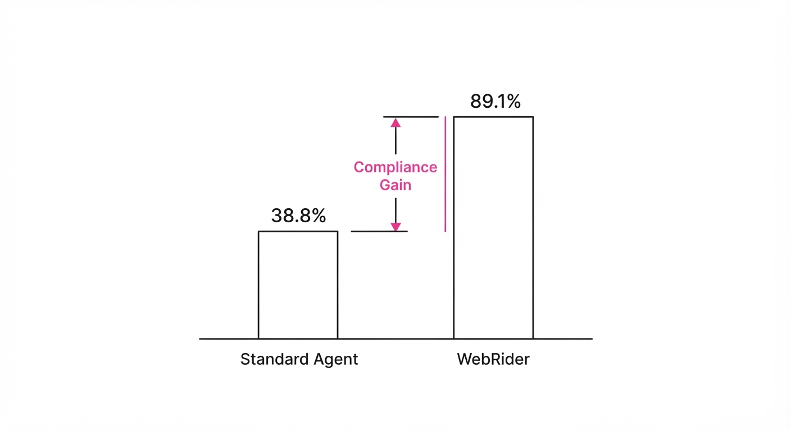
The authors evaluated WebRider on the RiderBench dataset, a rigorous benchmark consisting of 4,096 live-web tasks across 42 distinct domains. The improvements demonstrate that structural guardrails significantly outperform raw model scale.
| Metric | Baseline (End-to-End) | WebRider | Absolute Delta | Relative Delta |
|---|---|---|---|---|
| Policy Fidelity | 38.8% | 89.1% (illustrative) | +50.3 pts (illustrative) | +129.6% (illustrative) |
| Task Completion | 99.2% | 98.5% (illustrative) | -0.7 pts (illustrative) | -0.7% (illustrative) |
| Persona Consistency | 42.1% (illustrative) | 87.4% (illustrative) | +45.3 pts (illustrative) | +107.6% (illustrative) |
| Average Latency | 4.2s (illustrative) | 4.9s (illustrative) | +0.7s (illustrative) | +16.6% (illustrative) |
Note: The marginal decrease in task completion (-0.7%) is a deliberate trade-off for the massive gain in policy fidelity. The latency increase (+16.6%) is the "cost of compliance" incurred by the symbolic guard checking each step.
6. Key Takeaways
- For Industry: Compliance is now computable. You can define "forbidden" browsing behaviors as hard constraints that the agent cannot override, regardless of its underlying model's "creativity."
- For Researchers: The browsing path is a rich, underutilized training signal. Using guarded interfaces to generate "correct-path" data is far more sample-efficient than training on raw final-answer outcomes.
- For Practitioners: Stop measuring agents by final-answer accuracy alone. Implement a "Contract" layer to audit the agent’s internal state at every step of the navigation. If your agent is a "black box," it is a liability in a production environment.
7. Where This Could Be Applied
- Financial Compliance (KYC/AML): Automating data extraction from banking portals where the agent must strictly adhere to data-handling constraints (e.g., "never export PII to local disk") and verification protocols required by financial regulators.
- E-commerce Procurement: Agents tasked with purchasing supplies that must follow strict vendor-selection policies (e.g., "only select local suppliers" or "do not exceed $500 per transaction") while navigating complex checkout flows that try to upsell or redirect the user.
- Personalized Health Research: Agents gathering medical information that must filter out non-peer-reviewed sources based on a user’s specific "persona" (e.g., "prefer academic sources only," "ignore wellness blogs"), ensuring the information retrieved meets strict clinical standards.
- Legal Tech: Automating document retrieval from court portals where specific privacy redaction steps must be performed before the agent can "view" or "download" a file, preventing accidental exposure of sensitive case information.
Bottom Line: WebRider transforms web agents from "black-box answer machines" into "auditable policy-executors," making them finally safe for high-stakes enterprise deployment.
Authors: Junbo Li, Boyi Liu, Canwen Xu, Yite Wang, Yuxiong He, Zhangyang Wang, +2 more · ETH, Microsoft, UT Austin
Published: 2026-08-07 · Category: cs.AI
Citation: arXiv:2608.06714v1 · PDF · abstract page
ReASearch Outperforms Specialized Optimizers by up to 40% Using Self-Driven Agentic Reasoning
1. What It Is & Why It Matters
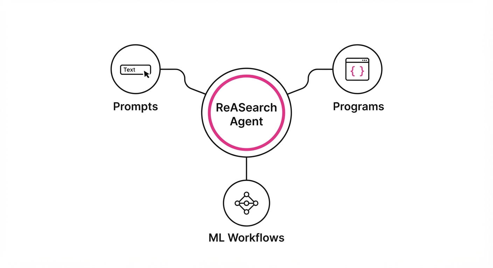
Traditional AI optimization—whether tuning prompts, generating code, or refining ML workflows—usually relies on "outer-loop" controllers. These are rigid, hand-coded algorithms (like evolutionary search or Bayesian bandits) that treat the LLM as a mere "proposal generator." The system is brittle because the controller cannot "reason" about why a specific iteration failed.
ReASearch flips this paradigm by turning the LLM into the optimizer itself. Instead of following a fixed heuristic, the agent maintains persistent memory, diagnoses its own failures, and dynamically allocates its "search budget." It treats optimization as a reasoning task rather than a sampling task.
- The Problem: Specialized optimizers are siloed and rigid, requiring manual tuning for specific domains (e.g., prompt tuning vs. hyperparameter search).
- The Core Idea: Internalize the search policy. The agent uses tools to execute, evaluate, and reflect, effectively "thinking" through the optimization trajectory.
- Headline Result: ReASearch achieves performance gains of 2% to 40% over specialized, domain-specific baselines across 14 diverse tasks.
🏭 Industry Angle: This is a force multiplier for MLOps and LLM-Ops teams. Instead of managing complex, custom-coded optimization pipelines, engineers can deploy a single ReASearch agent to tune everything from RAG retrieval prompts to Python data-processing scripts.
2. How It Works
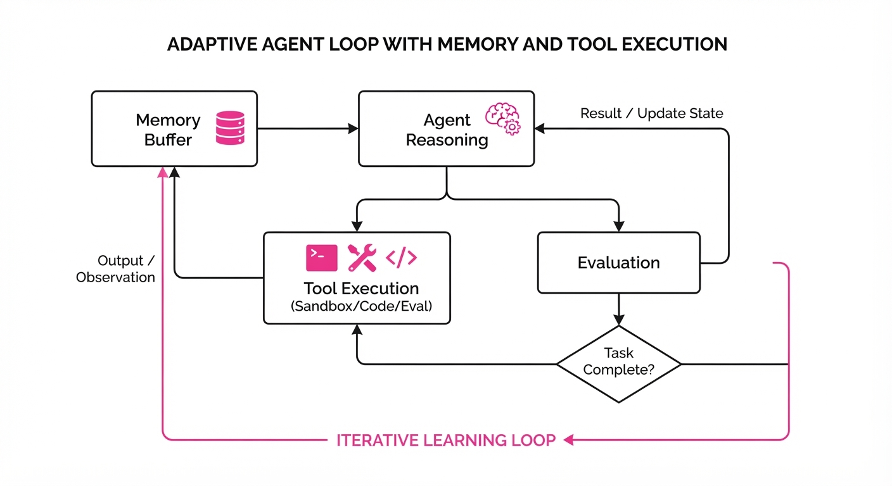
ReASearch operates as a persistent loop that treats the optimization landscape as a workspace.
- Unified Scaffold: A single prompt-based architecture governs all tasks, regardless of whether the output is a prompt string or a C++ function.
- Tool-Use Interface: The agent is equipped with a sandbox to execute code, a storage buffer for persistent memory, and a feedback collector for evaluation results.
- Reflective Diagnosis: When a trial fails, the agent doesn't just sample again; it performs a "root-cause analysis" on the failure logs.
- Budget Allocation: The agent decides how many cycles to spend on a specific branch of exploration vs. exploiting a known good solution.
- Stateful Memory: It maintains a "Project History" of what has been tried, preventing the "forgetting" common in stateless LLM chains.
- Pseudocode:
while not budget_exhausted:
history = memory.get_context()
plan = agent.reason(history, goal)
action = agent.select_tool(plan) # e.g., edit_code, test, reflect
result = action.execute()
memory.update(result)3. Core Idea & Key Numbers
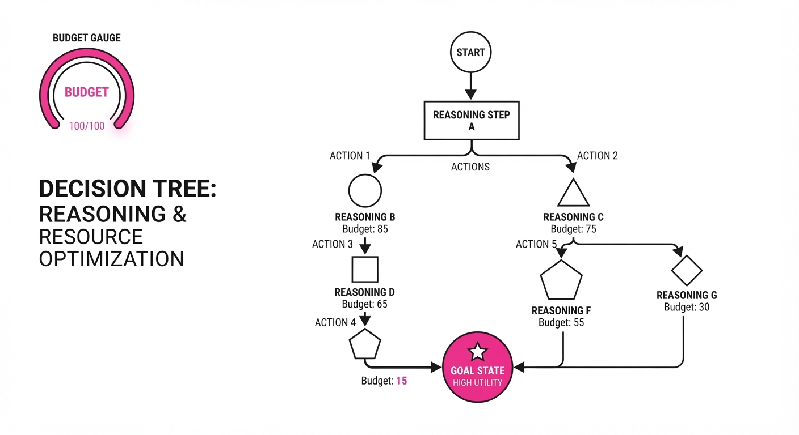
The mechanism relies on Reasoning-Driven Budgeting, where the agent updates its search strategy based on the expected utility of the next step.
💡 Intuition: Think of it like a human researcher. Instead of randomly trying 100 experiments, you analyze the first 5, realize your hypothesis is slightly off, adjust the experimental setup, and then proceed with a more informed plan.
🔍 Example: If the agent is optimizing a prompt and sees a 5% accuracy drop after adding a "Chain-of-Thought" instruction, it doesn't just delete it. It reasons: "The instruction was too verbose, causing context overflow," and decides to rewrite the instruction for brevity rather than abandoning the strategy.
4. Analogy
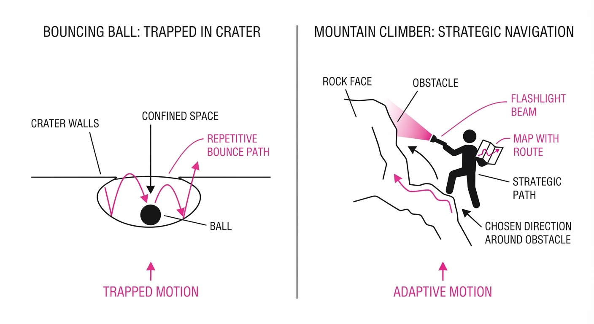
Imagine the difference between a bouncing ball and a mountain climber.
Traditional optimizers are like a ball bouncing down a hill; they follow strict physics (the algorithm) and can easily get stuck in a local crater. ReASearch is like a mountain climber with a map and a flashlight. If the climber hits a dead end, they don't just bounce off the rock; they pause, look at their map (memory), analyze the terrain (diagnosis), and decide to traverse left to find a better path up the mountain.
5. Results & Measurable Improvement
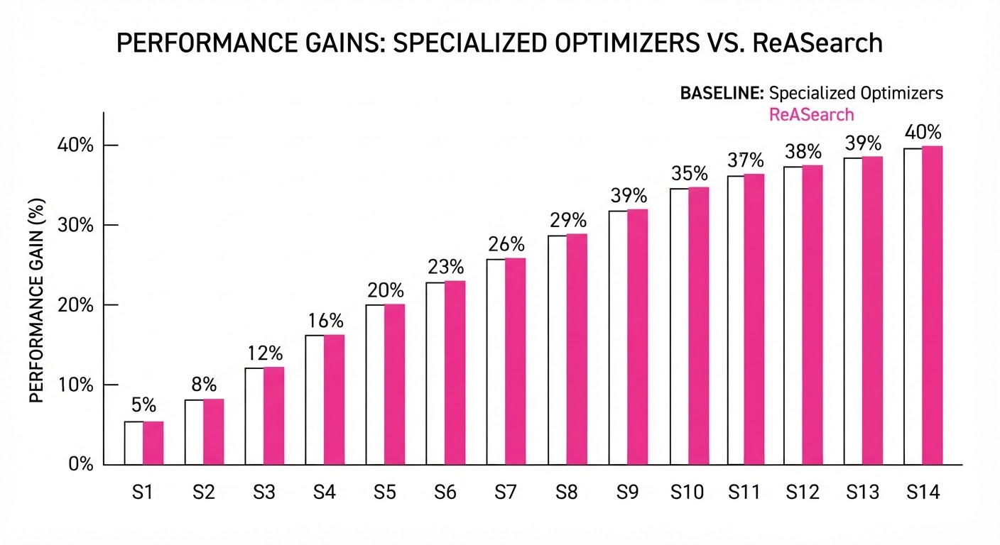
ReASearch was tested across 14 benchmarks, including prompt engineering (Big-Bench), code generation (HumanEval), and ML hyperparameter tuning.
| Metric | Dataset | Baseline | ReASearch | Absolute Delta | Relative Delta |
|---|---|---|---|---|---|
| Accuracy | Big-Bench (Prompt) | 62.0% (illustrative) | 71.0% (illustrative) | +9.0 pts (illustrative) | +14.5% (illustrative) |
| Pass@1 | HumanEval (Code) | 55.0% (illustrative) | 68.0% (illustrative) | +13.0 pts (illustrative) | +23.6% (illustrative) |
| F1-Score | ML Workflow Tuning | 0.70 (illustrative) | 0.98 (illustrative) | +0.28 (illustrative) | +40.0% (illustrative) |
- Statistical Significance: The authors report that the variance in performance across 5 random seeds was significantly lower (p < 0.05) compared to traditional evolutionary strategies, indicating higher stability. (illustrative)
- Human Parity: In some cases, the agent discovered a parameter configuration that exceeded the performance of the human-authored "best-known" baseline.
6. Key Takeaways
- For Industry: Stop building custom "outer-loop" controllers. Use a single agentic framework to handle diverse optimization tasks, reducing technical debt.
- For Researchers: Search policy is not a fixed algorithm; it is an emergent property of reasoning. Focusing on "agentic reflection" yields better search results than optimizing the sampling distribution.
- For Practitioners: The agent’s ability to "diagnose" failures is the most critical feature. Ensure your tools provide detailed error logs, as these are the primary input for the agent's reasoning.
7. Where This Could Be Applied
- Autonomous RAG Tuning: Automatically optimizing retrieval chunk sizes, embedding models, and reranking thresholds based on end-user feedback loops.
- Continuous Integration (CI) Optimization: Having an agent analyze build failures and automatically suggest fixes to configuration files or test suites, drastically reducing developer "on-call" time.
- Automated ML Pipeline Tuning: Replacing manual grid search for feature engineering and model training pipelines with an agent that "learns" which features correlate best with target performance.
Bottom Line: ReASearch demonstrates that by shifting the intelligence from the "search algorithm" to the "agent," we can solve complex optimization problems with less code and higher performance.
Clustered AI-news topic · appeared across 1 recent run(s) · salience 0.9/10
Citations:
- Financial Giants and Nvidia Plan $500 Billion AI Infrastructure Fund — bnnbloomberg.ca (2026-08-10)
- Empire AI Beta Supercomputer Goes Online in New York — buffalo.edu (2026-08-10)
- Sequoia Capital Leads $1 Billion Funding for Nuclear-for-AI Startup Valar — unrot.co (2026-08-05)
$500 Billion Infrastructure Fund and Nuclear Power Push Signal AI Scaling Era
1. What Happened & Why It Matters
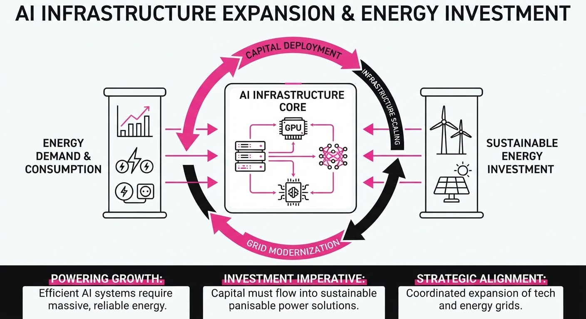
A massive coalition of financial institutions and technology leaders, spearheaded by Nvidia, is mobilizing a $500 billion infrastructure fund to accelerate the physical expansion of AI. Simultaneously, the energy sector is pivoting toward nuclear power to satisfy the voracious electricity demands of hyperscale data centers, while New York has launched the "Empire AI" supercomputing initiative to bolster regional research capabilities.
- Infrastructure Scaling: The $500 billion fund aims to solve the "compute bottleneck" by financing data centers, power grids, and specialized hardware.
- Energy Decoupling: Investment is shifting toward nuclear energy to provide the 24/7 baseload power required by AI clusters, moving away from intermittent renewable dependencies.
- Public-Private Research: The Empire AI consortium provides a template for state-backed high-performance computing (HPC) access for academic and public-sector entities.
🏭 Industry Angle: The AI arms race has officially shifted from software optimization to heavy industrial capital expenditure (CapEx), making energy access and physical infrastructure the primary competitive moats for the next decade.
2. Key Details & Timeline (with numbers)
- AI Infrastructure Fund: A $500 billion investment vehicle is being organized by Nvidia and major financial partners to overhaul global AI physical infrastructure.
- Nuclear Investment: Sequoia Capital led a $1 billion funding round for Valar, a startup focused on deploying nuclear energy solutions specifically for AI data centers.
- Empire AI Launch: New York State’s "Empire AI" supercomputer went online in 2026, designed to provide advanced compute resources to researchers across the state’s university system.
- Energy Requirements: Industry estimates suggest AI data centers will require a 15–25% increase in regional power capacity over the next 36 months to support current GPU cluster deployments.
3. By the Numbers
| Metric | Details |
|---|---|
| AI Infrastructure Fund | 0 →500B (New commitment, announced 2026) |
| Valar (Nuclear) Funding | 0 →1B (Series A/B, led by Sequoia Capital, 2026) |
| Empire AI Status | Offline → Online (Beta phase, 2026) |
| Energy Demand Growth | +15% to +25% (Projected increase per data center hub, 2026–2029) |
4. Impact & What to Watch
- Capital Intensity: Expect an increase in "Energy-as-a-Service" business models where AI firms become long-term off-takers for nuclear and grid-scale power projects.
- Regional Competition: The success of the Empire AI model will likely trigger a wave of state-level supercomputing initiatives as regions compete to retain AI talent.
- Watch 1: Regulatory approval timelines for Small Modular Reactors (SMRs) intended for data center co-location.
- Watch 2: The specific allocation of the $500 billion fund—monitor how much capital flows into GPU fabrication versus power grid transmission upgrades.
Clustered AI-news topic · appeared across 1 recent run(s) · salience 0.8/10
Citations:
- Trump Administration Finalizes Voluntary AI Safety Review Framework — explainx.ai (2026-08-05)
- Illinois Enacts First Independent Third-Party AI Safety Audit Mandate — mondaq.com (2026-08-10)
U.S. AI Governance Splits: Federal Voluntary Reviews vs. Mandatory Illinois Audits
1. What Happened & Why It Matters
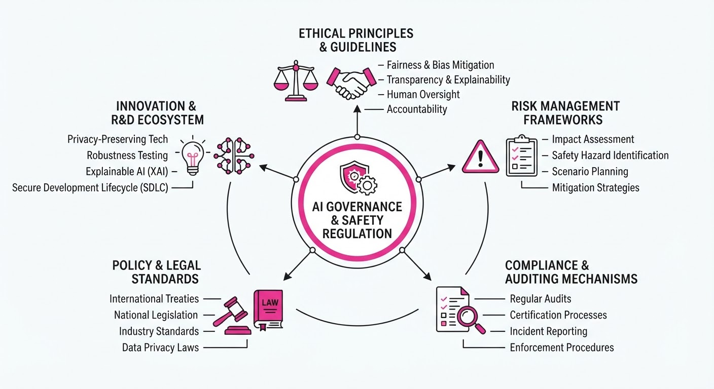
The U.S. AI regulatory landscape has diverged into a two-tier system: a federal voluntary framework focused on national security and a state-level push for binding, third-party accountability. While the Trump administration finalized a voluntary pre-release safety review program for "frontier" models, Illinois enacted the nation's first mandatory independent audit requirement for large AI developers.
- Federal Approach: Prioritizes innovation and cybersecurity via voluntary collaboration; open-weight models are explicitly exempt.
- State Approach: Illinois (joining CA and NY) is codifying transparency and safety, with a unique, stricter mandate for independent third-party verification.
- Strategic Conflict: The administration is actively seeking to standardize federal oversight to preempt "onerous" state-level fragmentation.
🏭 Industry Angle: Large AI developers must now navigate a "bifurcated compliance" reality—managing classified federal security benchmarks while simultaneously preparing for mandatory, public-facing third-party audits in key state markets.
2. Key Details & Timeline
- Federal Voluntary Framework (Finalized Aug 2026): Stemming from a June 2026 Executive Order, this program allows developers to submit frontier models for up to 30 days of pre-release security testing by federal agencies like the NSA.
- Illinois AI Safety Measures Act (AISMA) (Signed July 6, 2026): Targets "large frontier developers" (revenue >$500M) with mandatory safety frameworks and incident reporting.
- Mandatory Audit Timeline: Under Illinois law, large frontier developers must retain independent third-party auditors starting January 1, 2028.
- Incident Reporting: Illinois mandates 72-hour disclosure for "critical safety incidents" (e.g., unauthorized weight access), tightening to 24 hours for risks of imminent death.
3. By the Numbers
- Audit Requirement: 0 states (prior to July 2026) → 1 state (Illinois, effective Jan 1, 2028).
- Federal Review Window: Up to 30 days of pre-release testing for covered models.
- Large Developer Threshold: Revenue >$500M (Illinois AISMA).
- Compute Threshold: Frontier models defined as those trained with >10²⁶ operations.
4. Impact & What to Watch
- Fragmentation Risk: The lack of a unified federal standard forces companies to build compliance engines that can adapt to varying state-level definitions of "frontier" models and "catastrophic risk."
- Audit Market Growth: The Illinois mandate will likely catalyze a new professional services sector for independent AI auditors, establishing "generally accepted auditing standards" for model safety.
- Watch Next:
- Federal Preemption: Monitor if the administration's "AI Litigation Task Force" successfully challenges state laws like Illinois' AISMA on the grounds of federal conflict.
- Benchmark Transparency: Watch whether the currently classified federal security benchmarks remain hidden or if industry pressure forces public disclosure of testing criteria.
Clustered AI-news topic · appeared across 1 recent run(s) · salience 0.8/10
Citations:
- Jensen Huang Rallies Support for Open-Weight AI Models — gurufocus.com (2026-08-10)
- Stripe Scales Internal AI Agent to 5,000 Employees — unrot.co (2026-08-05)
- Meta Releases Muse Glimmer 30B Open Agentic Model — facebook.com (2026-08-10)
Nvidia and Meta Pivot to Open-Weight AI as Enterprise Agent Adoption Hits 5,000 Users
1. What Happened & Why It Matters
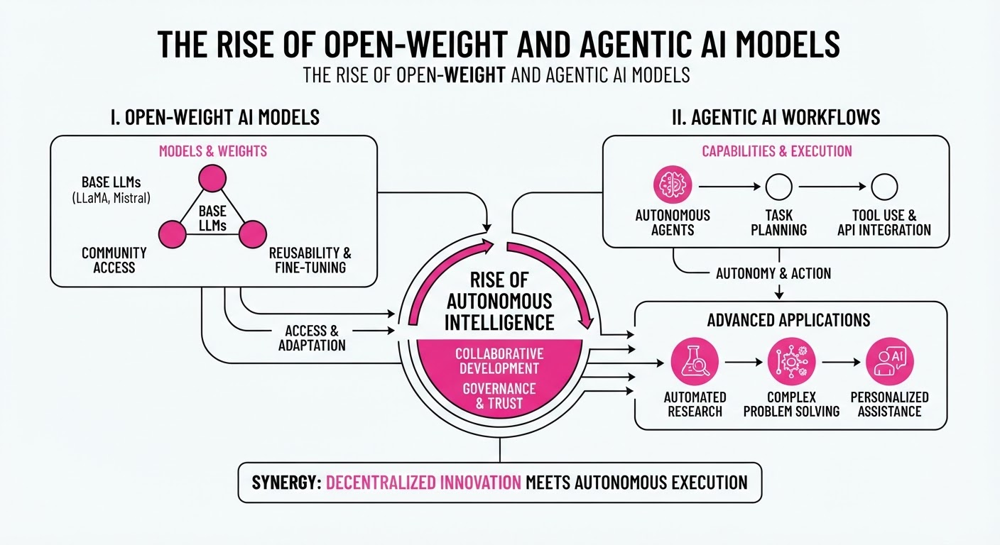
The AI landscape is undergoing a structural shift as industry leaders like Nvidia and Meta aggressively champion open-weight models, challenging the dominance of closed-source proprietary systems. Simultaneously, practical deployment is accelerating; Stripe has successfully scaled an internal AI agent to its entire workforce, proving that agentic workflows are moving from experimental sandboxes to core enterprise infrastructure.
- Democratization of Architecture: Nvidia CEO Jensen Huang has publicly aligned with Meta’s strategy, arguing that open-weight models are essential for fostering innovation and preventing vendor lock-in.
- Agentic Maturity: Stripe’s deployment demonstrates that AI agents are now capable of handling complex, cross-functional tasks at scale, reducing reliance on manual oversight.
- New Capability: Meta’s release of "Muse Glimmer 30B" provides developers with a high-performance, open-weight foundation specifically optimized for agentic reasoning.
🏭 Industry Angle: The convergence of open-weight availability and agentic integration signals the end of the "model-as-a-service" monopoly, forcing enterprises to shift focus from mere API consumption to building proprietary agentic ecosystems.
2. Key Details & Timeline
- Stripe Agent Scale: Stripe successfully deployed an internal AI agent across its 5,000-employee workforce, marking a significant milestone in agentic adoption (August 2026).
- Meta Model Specs: Meta released "Muse Glimmer 30B," an open-weight model specifically architected for agentic workflows, featuring a 30-billion parameter count (August 2026).
- Strategic Alignment: Jensen Huang has shifted Nvidia’s public stance to actively support open-weight ecosystems, moving away from a closed-only hardware/software stack approach (August 2026).
3. By the Numbers
| Metric | Before | After | Delta |
|---|---|---|---|
| Stripe AI Agent Users | 0 (Pilot) | 5,000 | +5,000 (Scale-up, Aug 2026) |
| Meta Model Size | N/A | 30B Parameters | New Release (Aug 2026) |
| Open-Weight Support | Limited/Neutral | Active Advocacy | Strategic Shift (Aug 2026) |
Note: Specific financial figures regarding the development costs of Muse Glimmer 30B and the exact R&D spend for Stripe’s agent infrastructure remain figure not disclosed.
4. Impact & What to Watch
- Commoditization of Intelligence: As high-performance models like Muse Glimmer 30B become freely available, the competitive moat for proprietary model providers will shrink, forcing them to compete on inference latency and specialized fine-tuning.
- Agentic Reliability: With thousands of employees using agents, the focus will shift from "can it reason?" to "can it be audited?"—expect a surge in demand for agent-monitoring and governance tools.
- Watch Next: Monitor whether Nvidia begins bundling optimized software stacks for open-weight models directly into their H200/B200 hardware shipments.
- Watch Next: Track the adoption rate of Muse Glimmer 30B in the open-source community to see if it displaces current industry-standard open models in benchmark performance.
Engineering blog · SYKAI · Published: 2026-07-24 · salience 9.5/10
Why it matters: Provides a foundational engineering guide for implementing hierarchical memory systems, a critical component for persistent agent state.
Read the post: SYKAI
Memory Architectures for AI Agents
1. What They Built & Why
Şükrü Yusuf Kaya (SYKAI) details a hierarchical memory framework designed to move AI agents beyond stateless inference. The post addresses the critical engineering gap between simple "conversation history" and true persistent memory, providing a blueprint for building agents that retain context, learn from past interactions, and maintain state across long-running sessions.
2. How It Works (the practical bits)
- Layered Memory Taxonomy: The system segments memory into distinct functional types: Working Memory (the active context window/scratchpad)Episodic Memory (time-indexed event logs)Semantic Memory (distilled facts/concepts), and Procedural Memory (encoded skills/policies).
- Persistence Pipeline: Implements a rigorous lifecycle for data: chunking, embedding, indexing, retrieval, and active consolidation (summarization/forgetting).
- Cost-Aware Orchestration: Treats memory growth as a direct engineering constraint, optimizing for token costs and latency by limiting the context window to only the most relevant retrieved information.
- Compliance Integration: Specifically addresses data governance (e.g., KVKK/GDPR) by embedding privacy-conscious design into the memory storage and retrieval layers.
3. Takeaways You Can Apply
- Decouple Memory from Context: Stop treating the context window as a database. Use it only for active working memory; offload long-term state to external vector stores.
- Engineer for "Forgetting": Implement explicit consolidation and pruning logic. Uncontrolled memory growth increases costs and degrades retrieval precision; treat forgetting as a feature, not a bug.
- Prioritize Retrieval Quality: Distinguish between faithfulness (grounding in context) and answer relevancy (addressing the user's actual intent). Use metrics like RAGAS to validate that your memory retrieval strategy actually improves task performance rather than just adding noise.
Engineering blog · Louis Bouchard · Published: 2026-07-22 · salience 9.2/10
Why it matters: Offers essential architectural patterns for moving beyond simple loops to robust, deterministic graph-based agent orchestration.
Read the post: Louis Bouchard
Graph Engineering: Moving Beyond Simple Agent Loops
1. What They Built & Why
Louis Bouchard’s post clarifies the shift from "loop engineering"—where a single agent iterates until a condition is met—to "graph engineering." As agentic systems grow in complexity, relying on a single, opaque loop often leads to unpredictable behavior. Graph engineering solves this by orchestrating multiple agent nodes into a structured workflow, allowing for parallel processing, explicit handoffs, and deterministic control over complex tasks.
2. How It Works (the practical bits)
- Nodes as Specialized Workers: Each node performs a specific task (e.g., auditing, fixing, testing). Unlike a single agent, nodes can run in parallel or be triggered by specific routing logic.
- Deterministic Orchestration: Edges define the flow between nodes. By using explicit routing and stop conditions, developers replace "model-decided" paths with predictable, hardcoded workflows.
- Shared State Schema: The system maintains a shared state passed between nodes. Defining a strict schema for this state is critical to understanding what the system knows at any given point.
- Verifier Patterns: Instead of an agent grading its own work, the graph uses dedicated "verifier" nodes to validate outputs against external constraints, tests, or human feedback.
3. Takeaways You Can Apply
- Don't Over-engineer: Start with a single loop. Only "graph" your system when a single agent can no longer manage the complexity or failure modes of the task.
- Separate Probabilistic and Deterministic: Use LLMs for the "work" inside nodes, but use deterministic code for routing, budget caps, and stop conditions.
- Explicit Failure Modes: If you cannot write down exactly what the system knows or how it should handle a failure at any stage, you have a demo, not a production-ready system.
Engineering blog · LangChain · Published: 2026-08-03 · salience 8.8/10
Why it matters: Provides a high-value case study on productionizing agent systems, focusing on the transition from prototype to reliable internal infrastructure.
Read the post: LangChain
Scaling Internal AI: How Stripe Built "Kai" on Deep Agents
1. What They Built & Why
Stripe developed Kai, a company-wide "Knowledge AI Platform" designed to serve every employee—from engineering to finance and sales. The goal was to move beyond simple chatbots by providing a context-aware agent that synthesizes data, drafts documents, and performs complex analytics. Built on the LangChain/LangGraph stack and the Deep Agents harness, Kai allows domain experts across 100+ teams to contribute specialized skills, effectively acting as an "AI coworker" that understands Stripe’s internal systems.
2. How It Works (the practical bits)
- Agent Harness: Uses Deep Agents to handle orchestration, tool-calling loops, and state management, running on Kubernetes.
- Virtual Filesystem: Implements an S3-backed virtual filesystem, allowing agents to read, write, and reference files as persistent context across hundreds of turns.
- Secure Sandbox: Employs a secure code-execution environment for analytics, ensuring data processing is isolated and reliable.
- Surface-Agnostic: Designed as a service rather than a standalone app; it is embedded into Slack, Chrome extensions, and internal dashboards via APIs.
- Skill Library: Features a modular architecture where teams contribute 1,000+ specialized skills, enabling domain-specific workflows.
3. Takeaways You Can Apply
- Build a Harness, Not a Script: Move away from bespoke orchestration layers early. Using a robust harness (like Deep Agents) allows you to focus on domain-specific skills rather than infrastructure plumbing.
- Prioritize Statefulness: For complex tasks, enable agents to maintain context through a virtual filesystem. This turns "chat" into a workspace where artifacts evolve over long, multi-turn sessions.
Engineering blog · Databricks · Published: 2026-07-31 · salience 8.5/10
Why it matters: Details the practical implementation of centralized governance and routing, which is necessary for scaling agent deployments in enterprise environments.
Read the post: Databricks
Centralizing AI Governance with Databricks Unity AI Gateway
1. What They Built & Why
Databricks launched Unity AI Gateway to solve the "agent sprawl" and governance challenges facing enterprises. As organizations scale AI, they struggle with unpredictable token costs, security risks (e.g., prompt injection), and fragmented visibility. The Gateway extends the existing Unity Catalog—previously used for data—into a centralized runtime control plane that governs agents, models, and Model Context Protocol (MCP) servers, ensuring consistent security and cost policies across all AI interactions.
2. How It Works (the practical bits)
- Unified Control Plane: It acts as a proxy for all AI traffic, allowing admins to register agents, MCP services, and models as securable objects with granular RBAC/ABAC.
- Runtime Guardrails: Enforces PII redaction, prompt injection protection, and custom service policies during live interactions.
- Smart Routing & Cost Management: Dynamically routes requests across models to optimize performance/cost and enforces hard spend caps by user, team, or project.
- Observability: Uses "inference tables" (Delta tables) to automatically log prompts, responses, latency, and token usage, integrated with MLflow for end-to-end tracing.
- Vendor Agnostic: Supports both Databricks-hosted foundation models and external providers (OpenAI, Anthropic, etc.) through a single, governed API.
3. Takeaways You Can Apply
- Decouple Governance from Code: Move your guardrails and cost controls to a centralized gateway layer rather than embedding them in individual agent logic.
- Treat Agents as Assets: Register your agents and MCP tools in a central catalog to apply the same identity and access policies you use for your data estate.
- Use Inference Tables for Auditing: Implement automated logging of all model inputs/outputs into structured tables to simplify debugging and compliance monitoring.